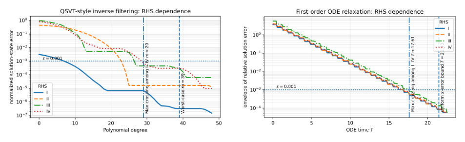
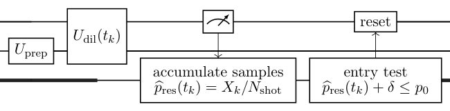
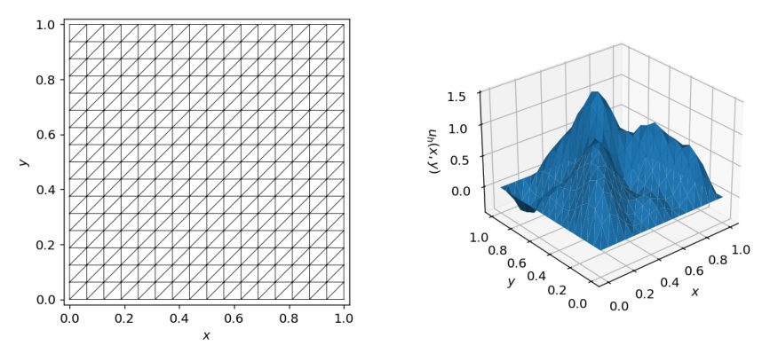
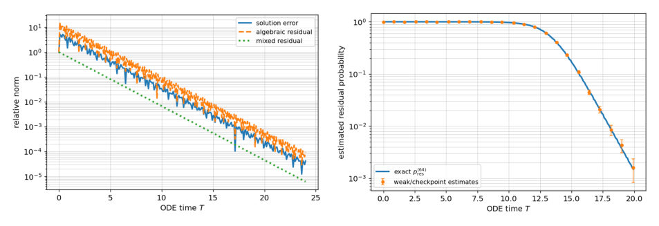

← Index · ← Previous · Next →
Authors: Xiantao Li
Type: theory · Category: quantum information and computing · PDF: https://arxiv.org/pdf/2605.06414v1
Analysis basis: full PDF text, analyzed in chunks




Summary. This paper introduces an adaptive quantum algorithm for solving linear systems arising from elliptic PDEs. By incorporating a residual register into the quantum dynamics, the algorithm can stop computation early once convergence is detected, significantly improving efficiency over worst-case-based schedules.
Why it may be interesting. not directly relevant
Main problem. Standard Quantum Linear System Algorithms (QLSAs) lack an a posteriori mechanism to signal convergence, often requiring fixed runtimes based on conservative worst-case spectral information.
Main result. The authors develop a residual-based QLSA with a dynamic stopping rule that uses a co-evolving residual register to detect convergence, potentially reducing circuit depth and gate count for smooth right-hand sides.
Method. The algorithm uses an ODE-based accumulator approach where the linear system is formulated as a time-evolution problem, augmented with residual variables to enable on-the-fly monitoring via checkpoint circuits.
Model / system. The algorithm is applied to the discretization of second-order elliptic Partial Differential Equations (PDEs) using a Galerkin finite element method, specifically targeting the structure A_h = G_h^dagger G_h.
Key observables. The residual probability (p_res), which serves as a convergence indicator, and the relative error of the solution vector.
Important parameters / regimes. The mesh size (h), the condition number of the matrix, the target precision (epsilon), and the normalization scale of the block encoding (alpha_G).
Assumptions / limitations. The method assumes the existence of a sparse-access block encoding for the gradient operator and relies on the exponential stability of the underlying ODE dynamics.
Figures summary. Figure 1 compares different QLSA approaches for a 2D Poisson problem; Figure 2 shows the workflow for the checkpoint and production run; Figure 3 displays the finite element mesh; Figure 4 illustrates the decay of error and residual probability.
Paper structure. The paper introduces the problem of fixed-runtime QLSAs, proposes an augmented ODE-based solver, provides mathematical proofs for stability and complexity, and validates the method with numerical experiments on a 2D Poisson problem.
Quantum linear-system algorithms (QLSAs) have rigorous worst-case complexity guarantees, but their runtimes are often chosen from spectral information assumed in advance. What is largely lacking is an a posteriori progress flag: most QLSA workflows, unlike the classical counterparts, do not provide a built-in mechanism to signal whether a particular instance has already converged. For discretizations of elliptic PDEs $-\nabla\cdot(a(x)\nabla u(x))=f(x),$ with divergence--gradient structure \[ -\nabla\cdot \big(a(x)\nabla) \approx A_h=G_h^\dagger G_h, \] we formulate a stable first-order ODE whose limiting solution block is the desired Galerkin solution. The PDE-dependent scale is then \(\norm{G_h}=\bigO(h^{-1})\), comparable to factorized QLSA constructions with square-root condition-number scaling. We design an augmented dynamics with residual variables, in which measuring a residual register gives an on-the-fly convergence indicator without reconstructing the solution vector. For smooth right-hand sides, dynamic stopping can reduce the evolution time and gate count relative to a fixed worst-case schedule, and may also reduce exposure to accumulated hardware errors. Numerical experiments for a two-dimensional finite element Poisson problem show that the residual-register probability follows the actual error decay and, for some right-hand sides, can stop the quantum circuit well before a conservative worst-case runtime estimate is reached.
Authors: Leo Wursthorn, Jonathan Mandelbaum, Sisi Miao, Hedongliang Liu, Holger Jäkel, Stergios Koutsioumpas, Laurent Schmalen
Type: theory · Category: quantum information and computing · PDF: https://arxiv.org/pdf/2605.06547v1
Analysis basis: full PDF text, analyzed in chunks
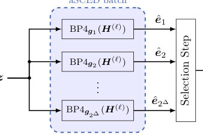

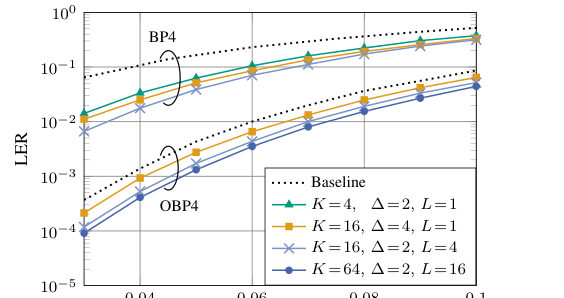
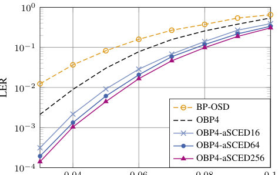
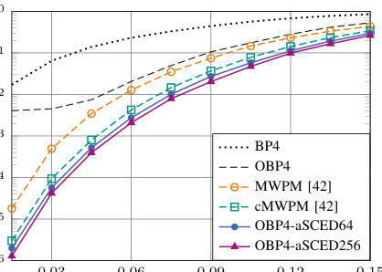
Summary. This paper introduces a new decoding technique called Affine Subcode Ensemble Decoding (aSCED) designed to handle the degeneracy issues in QLDPC codes. By using additional parity checks to split large degeneracy sets, the method improves the convergence of Belief Propagation and achieves lower logical error rates than existing decoders.
Why it may be interesting. not directly relevant
Main problem. The inherent degeneracy in Quantum Low-Density Parity-Check (QLDPC) codes causes Belief Propagation (BP) decoders to oscillate or fail to converge, leading to high logical error rates.
Main result. The proposed aSCED framework significantly improves decoding convergence and reduces logical error rates, outperforming standard MWPM and BP-OSD decoders on Toric and Generalized Bicycle codes.
Method. The authors extend the classical Affine Subcode Ensemble Decoding (aSCED) to the quantum setting by appending linearly independent 'splitter' rows to the check matrix and using an ensemble of parallel decoding paths with overcomplete matrices.
Model / system. The study focuses on stabilizer codes, specifically the Toric code and Generalized Bicycle (GB) codes, under a depolarizing error channel where physical qubits are subject to independent Pauli X, Y, and Z errors.
Key observables. Logical Error Rate (LER), Type I failure fraction (non-convergence), and Type II failure fraction (logical errors).
Important parameters / regimes. Physical error probability (p), ensemble size (K), number of batches (L), and number of splitters (delta).
Assumptions / limitations. The error model assumes a depolarizing channel with independent errors per qubit and relies on the stabilizer formalism.
Figures summary. Figure 1 shows the aSCED batch block diagram; Figure 2 compares LER for various aSCED configurations; Figure 3 compares aSCED to MWPM decoders on the Toric code; Figure 4 shows the reduction in Type I failures; Figure 5 compares aSCED to BP-OSD on GB codes.
Paper structure. The paper introduces the problem of degeneracy-induced decoding failure, defines the mathematical framework of degeneracy sets, proposes the aSCED method using splitters and overcomplete matrices, presents Monte-Carlo simulation results on Toric and GB codes, and concludes with a comparison against state-of-the-art decoders.
Quantum low-density parity-check codes are promising candidates for low-overhead fault-tolerant quantum computing, but degeneracy is known to impair the convergence of belief-propagation (BP) decoding of these codes. In this work, we show that appending linearly independent rows to a check matrix of a stabilizer code can reduce the search space for a valid degenerate solution. Motivated by this, we extend the recently proposed affine subcode ensemble decoding technique from the classical to the quantum setting. Moreover, we employ overcomplete matrices for each decoding path. Monte-Carlo simulations on toric and generalized bicycle codes demonstrate improved convergence and reduced logical error rate.
Authors: Pierre-Antoine Bernard, Nathan Wiebe
Type: theory · Category: quantum information and computing · PDF: https://arxiv.org/pdf/2605.05321v1
Analysis basis: full PDF text, analyzed in chunks
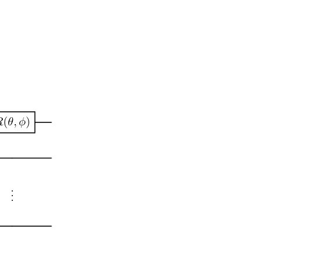
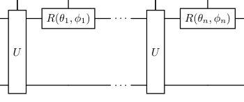
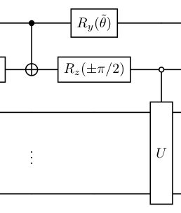
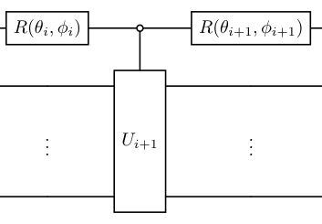
Summary. This paper provides a mathematical breakthrough for Quantum Signal Processing by replacing numerical angle-finding with analytical solutions derived from orthogonal polynomial theory. It establishes explicit formulas for various polynomial families and demonstrates highly efficient gate complexity for approximating smooth functions.
Why it may be interesting. not directly relevant
Main problem. The paper addresses the difficulty of analytically finding the rotation angles required for Quantum Signal Processing (QSP) and seeks to characterize the classes of polynomials achievable in various QSP variants.
Main result. The authors derive explicit analytical expressions for QSP angles using orthogonal polynomial theory and prove that an epsilon-approximation of smooth functions can be achieved with O(log(1/epsilon)) gate complexity using Hermite series expansions.
Method. The study utilizes the theory of orthogonal and biorthogonal polynomials (including Hermite, Jacobi, and Rogers-Szego), recurrence relations, and complex analysis (residue calculus) to solve the angle-finding problem.
Model / system. The framework is based on Quantum Signal Processing (QSP), a quantum algorithmic protocol for implementing polynomial transformations of a unitary operator U, including variants like SU(1,1)-QSP and bivariate QSP.
Key observables. QSP rotation angles (theta and phi), block-encoding constants, and polynomial recurrence coefficients.
Important parameters / regimes. Polynomial degree n, error tolerance epsilon, and the growth rate of the normalization constant alpha_n.
Assumptions / limitations. Assumes the existence of quasi-definite linear functionals and that target polynomials have distinct real roots; function approximation assumes specific smoothness/growth constraints.
Figures summary. Figure 1 shows a generalized QSP circuit iteration; Figure 2 compares LCU architectures; Figure 3 displays the OP-QSP circuit architecture; Figure 5 illustrates bivariate QSP; Figure 6 shows an SU(1,1) rotation implementation circuit.
Paper structure. The paper introduces the QSP angle-finding problem, establishes the connection between QSP and orthogonal polynomial theory, provides explicit angle derivations for specific polynomial families, extends the results to SU(1,1) and bivariate QSP, and concludes with complexity analysis for function approximation.
Quantum signal processing is a powerful framework in quantum algorithms, playing a central role in Hamiltonian simulation and related applications. The sequence of polynomials implemented at each step of this protocol provides a polynomial basis for block-encoding any polynomial of a unitary. We characterize the achievable polynomial bases in terms of their orthogonality or biorthogonality with respect to a linear functional admitting an integral representation. Explicit expressions for the quantum signal processing angles are derived for families of polynomial sequences, including Hermite, Jacobi, and Rogers-Szegő polynomials. We show that $2n+2$ rotation angles are required to encode a sequence of polynomials in these classes up to degree $n$. We use this result to show that an $ε$-approximation of a smooth function $f$ can be block-encoded using $O(\log(1/ε))$ gates via its Hermite series expansion. The connections established with the theory of orthogonal and biorthogonal polynomials lead to a new method for solving the quantum signal processing angle-finding problem, yielding explicit expressions for the angles. They also provide a complete characterization of the polynomials achievable by $\mathrm{SU}(1,1)$-QSP in terms of their roots. Biorthogonality properties are shown to hold in the bivariate QSP setting, yielding a set of necessary conditions for achievable polynomials.
Authors: Michael Poppel, David Bucher, Maximilian Zorn, Markus Baumann, Sebastian Wölckert, Claudia Linnhoff-Popien, Philipp Altmann, Jonas Stein
Type: theory · Category: quantum information and computing · PDF: https://arxiv.org/pdf/2605.05942v1
Analysis basis: full PDF text, analyzed in chunks
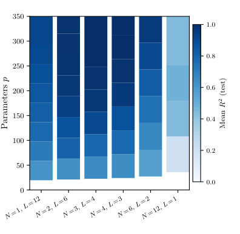
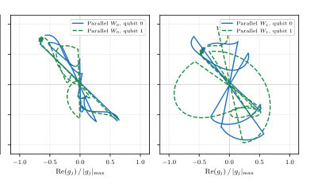
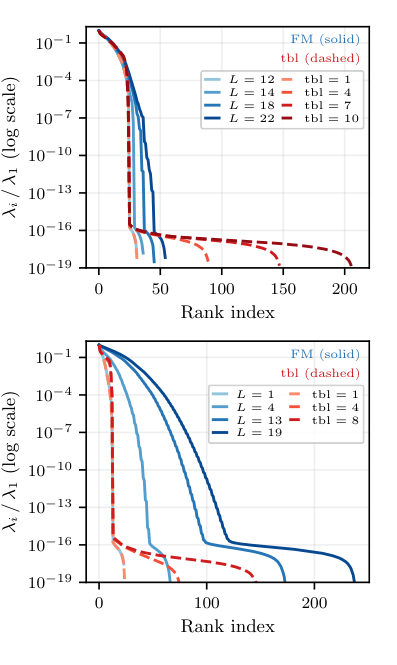
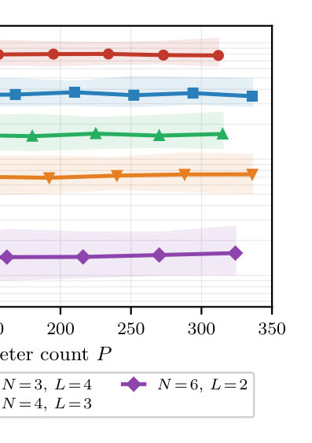
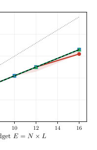
Summary. This paper explains why certain quantum neural network architectures fail to train even when they have sufficient expressivity. It identifies 'structural gradient starvation' in serial architectures and demonstrates that expanding the encoding budget is a much more efficient way to improve performance than simply adding more trainable layers.
Why it may be interesting. not directly relevant
Main problem. Investigating why Variational Quantum Circuit (VQC) architectures with identical frequency spectra exhibit significantly different trainability and identifying the mechanism behind structural gradient starvation.
Main result. The authors identify that serial architectures suffer from structural gradient starvation due to a rank-deficient Jacobian caused by phase-locking, whereas parallel architectures avoid this. They also show that increasing the encoding budget (FM route) is more parameter-efficient than adding trainable blocks.
Method. The study uses Fourier analysis of VQCs, Jacobian rank and null space analysis, and comparison of the Quantum Fisher Information Matrix (QFIM) and the Data Jacobian.
Model / system. Variational Quantum Neural Networks (VQNNs) using angle encoding (data re-uploading) with serial (N=1) and parallel (N>1) architectures, utilizing a Rot ansatz with CNOT ladder entanglement.
Key observables. Jacobian rank and null space dimension, coefficient matching Jacobian (J), Quantum Fisher Information Matrix (QFIM) eigenvalue spectrum, and R-squared (R2) accuracy.
Important parameters / regimes. Number of qubits (N), number of encoding layers (L), encoding budget (E = NL), parameter count (P), and the geometric threshold (Rmax).
Assumptions / limitations. The analysis assumes the circuits implement truncated Fourier series via angle encoding and focuses on the regime of regression tasks.
Figures summary. Figure 1 shows success rates vs. parameter count; Figure 2 demonstrates phase-locking in serial vs. parallel gradients; Figure 3 compares the efficiency of the FM route vs. the trainable blocks route; Figure 4 rules out barren plateaus; Figure 5 shows Jacobian rank saturation; Figure 7 shows real-world validation on temperature data.
Paper structure. The paper introduces the problem of architectural trainability, provides a theoretical framework using Fourier analysis, proves the phase-locking mechanism in serial circuits, compares parameter efficiency of different scaling routes, and validates findings with real-world time-series data.
Variational quantum circuits with angle encoding implement truncated Fourier series, and architectures arranging $N$ qubits with $L$ encoding layers each -- sharing encoding budget $E = NL$ -- generate identical frequency spectra, identical frequency redundancy, and require the same minimum parameter count for coefficient control. Despite this equivalence, trainability varies substantially with architecture shape $(N,L)$ at fixed $E$. We identify structural rank deficiency of the coefficient matching Jacobian $J$ as the mechanism responsible. For serial single-qubit architectures, we prove $\mathrm{rank}(J) \leq 2L+1$ regardless of parameter count $P$, with $\dim(\ker J) \geq P-(2L+1)$ growing without bound -- a phenomenon we term \emph{structural gradient starvation}: a growing fraction of parameters become structurally decoupled from the loss as $P$ increases at fixed $L$. Parallel architectures avoid this via independent phase trajectories, ensuring $σ_{\min}(J^{(\mathrm{par})}) > 0$ generically for $P \leq 2E+1$, so no parameter lies in $\ker J$. For practitioners, we further show that the two natural routes to increasing parameter count have fundamentally different effects: adding feature map (FM) layers monotonically strengthens the Jacobian QFIM eigenvalue spectrum and achieves $R^2 \geq 0.95$ with $1.6$--$2.2\times$ fewer parameters than adding trainable blocks across all tested architectures, while trainable blocks improve training only through the classical interpolation mechanism with no quantum-specific benefit.
Authors: Fan Zhang, Yanxing Li, Chengye Dong, Ninad Kailas Dongre, Viet-Anh Ha, Yu-Chuan Lin, Yiyuan Luo, Hyunsue Kim, Joshua A. Robinson, Feliciano Giustino, Fan Zhang, Chih-Kang Shih
Type: both · Category: strongly correlated electrons · PDF: https://arxiv.org/pdf/2605.05587v1
Analysis basis: full PDF text, analyzed in chunks
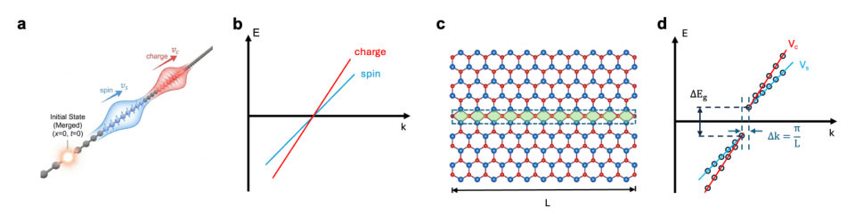
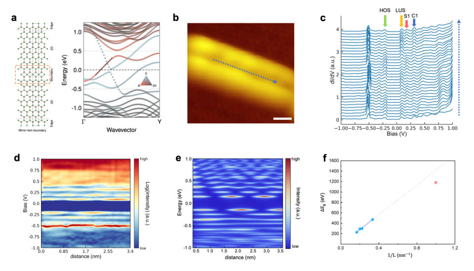
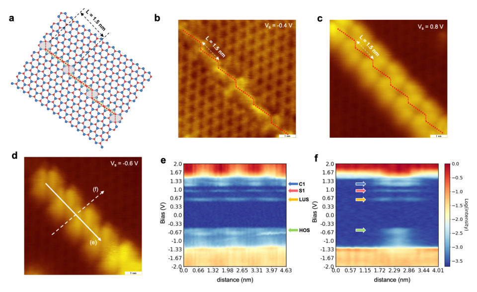
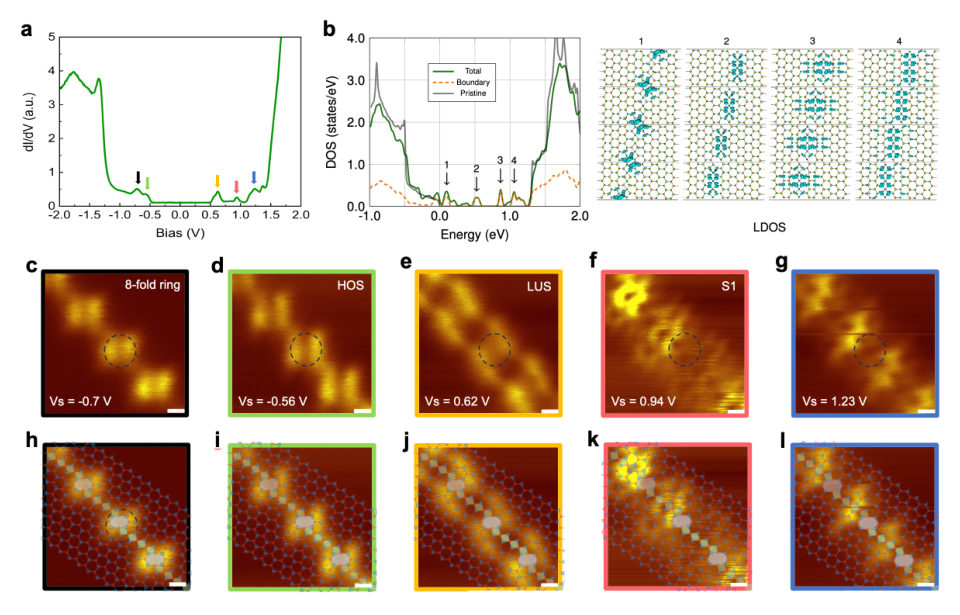
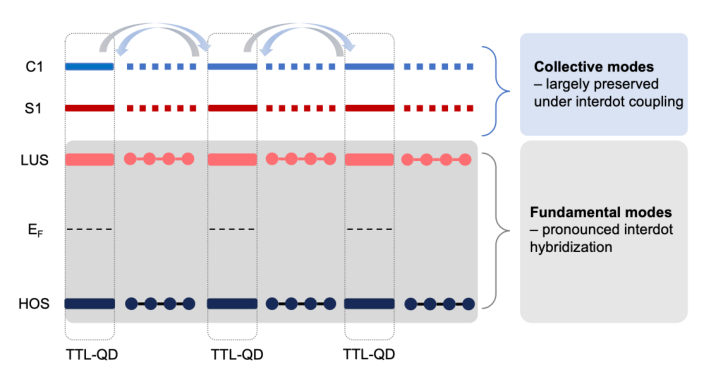
Summary. The researchers show that collective quantum states like spin-charge separation can survive even when confined to segments as small as one nanometer. They discovered that while single-particle states hybridize when segments are linked into chains, the collective many-body excitations remain largely localized. This establishes a new platform for engineering strongly correlated quantum phases using atomic-scale building blocks.
Why it may be interesting. It provides a unique look at how many-body correlations and fractionalized excitations behave when spatial extent is reduced to the atomic limit, which is relevant to the study of many-body dynamics and the stability of emergent phases in confined geometries.
Main problem. Determining whether collective quantum states, specifically spin-charge separation in Tomonaga-Luttinger liquids, can persist at the extreme atomic scale of ~1 nm.
Main result. The study demonstrates that collective spin and charge excitations remain robust even in atomically confined segments, forming a new class of many-body quantum dots where collective modes are largely decoupled from inter-dot hybridization.
Method. Low-temperature scanning tunneling microscopy (STM) and spectroscopy (STS) combined with Density Functional Theory (DFT) calculations and finite-length Luttinger liquid modeling.
Model / system. Atomically confined mirror twin boundary (MTB) segments in monolayer WSe2, modeled as a 'TLL-in-a-box' and organized into periodic 1D chains of many-body quantum dots.
Key observables. Spin-charge separation, energy gap scaling (delta E proportional to 1/L), spatial profiles of spin and charge excitations, and inter-dot coupling/hybridization.
Important parameters / regimes. Luttinger interaction parameter (K), excitation velocities (v_sigma, v_rho), and the atomic-scale confinement limit (~1 nm).
Assumptions / limitations. The study challenges the assumption that collective phenomena require spatial extensivity and investigates the limits of the thermodynamic limit.
Figures summary. Fig 1: Schematic of TLL theory in infinite vs finite systems; Fig 2: TLL behavior in extended MTBs and 1/L scaling; Fig 3: STM/STS of atomic-scale segments showing preserved spin-charge separation; Fig 4: Comparison of experimental spectra with DFT to identify interaction-driven states; Fig 5: Hierarchy of coupling in chains.
Paper structure. The paper begins by establishing TLL behavior in extended systems, moves to testing the limit of confinement at the atomic scale, and concludes by examining how these modes respond to inter-dot coupling in ordered superlattices.
Collective quantum states are often associated with extended systems, where spatially extensive degrees of freedom enable emergent many-body behavior; whether such strongly correlated states survive at atomic dimensions remains a fundamental question. Tomonaga-Luttinger liquids provide a paradigmatic example of one-dimensional collective quantum matter characterized by spin-charge separation. Using low-temperature scanning tunneling microscopy and spectroscopy, we directly visualize quantized collective modes in atomically confined mirror twin boundary segments of monolayer WSe2. Distinct standing-wave branches associated with fractionalized spin and charge excitations persist in segments as short as one nanometer, establishing the atomic-scale confinement limit of Luttinger-liquid behavior. These ultrashort segments form a new class of many-body quantum dots whose discrete spectra arise from confined collective bosonic modes rather than single-particle electron states. When assembled into ordered chains, inter-dot coupling reshapes electron-like fundamental states while collective spin/charge excitations remain largely intact, revealing distinct coupling responses of emergent many-body modes. Our results demonstrate that collective quantum matter can persist and exhibit fundamentally distinct coupling behavior at atomic length scales, establishing a novel platform for engineering strongly correlated quantum phases from atomically confined building blocks.
Authors: Luke Pritchard Cairns, Kohtaro Yamakawa, Shengzhi Zhang, Youzhe Chen, Bernard Field, Rainer Reczek, Ryan P. Day, Joel E. Moore, Marcelo Jaime, Sinead M. Griffin, Robert J. Birgeneau, James G. Analytis
Type: both · Category: strongly correlated electrons · PDF: https://arxiv.org/pdf/2605.06649v1
Analysis basis: full PDF text, analyzed in chunks
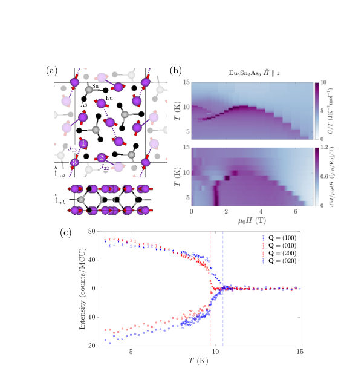
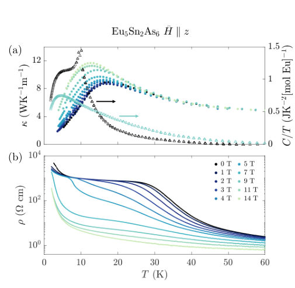
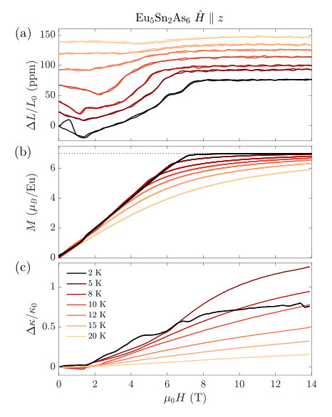
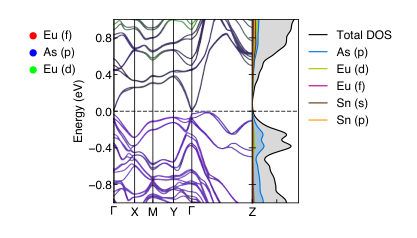
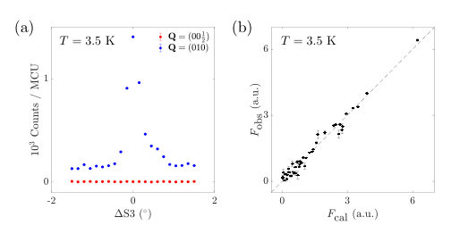
Summary. This paper investigates the mechanism behind colossal magnetoresistance in a new class of europium-based antiferromagnets. It reveals that the resistance change is driven by a magnetic field lifting the degeneracy of frustrated spin configurations, which reduces phonon scattering. This suggests that lattice-mediated exchange dynamics are the primary driver of electron delocalization in this material.
Why it may be interesting. not directly relevant
Main problem. Understanding the physical origin of Colossal Magnetoresistance (CMR) in the Eu2+-based antiferromagnet Eu5Sn2As6, specifically the role of the crystal lattice and phonon-driven exchange dynamics.
Main result. The authors demonstrate that CMR is driven by the suppression of phonon scattering caused by exchange frustration; applying a magnetic field lifts the degeneracy of spin/lattice configurations, quenching magnetostrain and enhancing thermal conductivity.
Method. The study combines experimental measurements (thermal conductivity, magnetostriction, neutron diffraction, and resistivity) with computational techniques (DFT+U and classical spin modeling using SU(N)NY).
Model / system. The system is Eu5Sn2As6, a Zintl-phase stoichiometric antiferromagnet with a non-collinear magnetic ground state. The magnetic interactions are modeled using an effective Heisenberg-like Hamiltonian with a small Dzyaloshinskii-Moriya term.
Key observables. Thermal conductivity, electrical resistivity, magnetostriction, magnetization, specific heat, and magnetic Bragg peaks.
Important parameters / regimes. Magnetic transitions at TN' = 9.4 K and TN = 10.3 K; CMR magnitude up to a factor of 6000; band gap of ~35-38 meV; Debye temperature of ~21 K.
Assumptions / limitations. The thermal conductivity is assumed to be phonon-dominated; the electronic transport is modeled using the semiclassical Boltzmann transport equation assuming a constant relaxation time.
Figures summary. Fig 1: Crystal structure and magnetic neutron diffraction; Fig 2: Temperature/field dependence of thermal conductivity, specific heat, and resistivity; Fig 3: Field dependence of magnetostriction, magnetization, and thermal conductivity; Fig 4: Magnetic rocking scans; Fig 5: Electronic band structure and DOS.
Paper structure. The paper introduces the CMR phenomenon in Eu5Sn2As6, presents experimental characterization of magnetic and thermal properties, details the neutron diffraction and DFT results to establish the magnetic/electronic structure, and concludes with a proposed mechanism involving exchange-striction-driven phonon scattering suppression.
The emergence of colossal magnetoresistance in a new generation of Eu$^{2+}$-based antiferromagnets is intriguing given stark contrasts to the archetypal perovskite manganites and doped Eu-chalcogenides. In this study the thermal conductivity and magnetostriction of Eu$_5$Sn$_2$As$_6$ -- one such representative -- have been measured to better understand the role of the crystal lattice. Both properties are strongly field-dependent and mirror the magnetization, saturating once the Eu$^{2+}$ moments are polarized. The field-enhancement of the phonon-dominated thermal conductivity is interpreted through the lifting of a degeneracy of spin configurations, and the subsequent saturation due to quenched magnetostrain in high field. Comparison with spin-glass insulators suggests that this phenomenon is not a byproduct but rather the driver of electron delocalization due to the suppression of strong phonon scattering arising from exchange frustration.
Authors: Minwoo Kim, Seungtae Kim, Je-Yeon Jung, Min Young Ha, Won Bo Lee
Type: both · Category: disordered systems and neural networks · PDF: https://arxiv.org/pdf/2605.05733v1
Analysis basis: full PDF text, analyzed in chunks
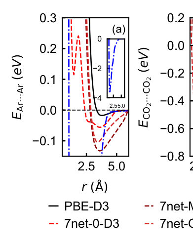
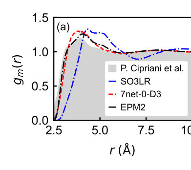
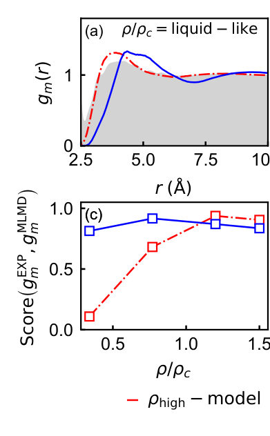
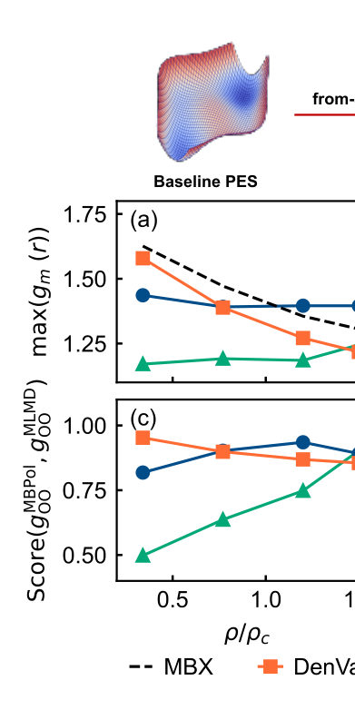
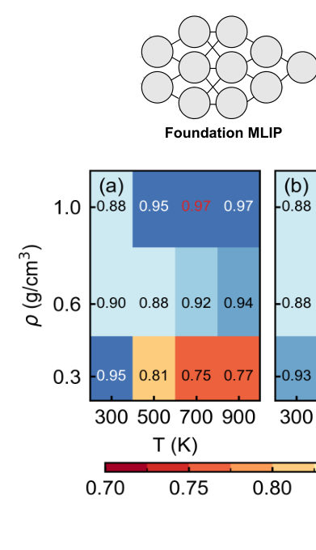
Summary. This paper demonstrates that to make machine learning potentials work across different phases (like gas to liquid), it is more important to train on a variety of densities than a variety of temperatures. This is because density changes the local arrangement of atoms more significantly than temperature does, making density diversity a key design principle for robust atomistic simulations.
Why it may be interesting. not directly relevant
Main problem. The lack of thermodynamic transferability in Machine Learning Interatomic Potentials (MLIPs), specifically the inability of models to accurately describe fluid-phase systems when trained on different density regimes.
Main result. Density diversification (DenVar) is more effective than temperature diversification (TempVar) for building thermodynamically transferable MLIPs because local coordination topology is more sensitive to density than temperature.
Method. The study uses controlled 'from-scratch' training and 'distillation' experiments on CO2 and H2O, comparing datasets with varying density and temperature under a fixed computational budget.
Model / system. The study evaluates various MLIP architectures, including foundation models (SevenNet, SO3krates) and from-scratch models (NequIP, MACE), applied to molecular systems like Ar-Ar, CO2-CO2, and H2O-H2O.
Key observables. Pairwise interaction energy profiles, Radial Distribution Functions (RDFs), RDF similarity scores, and coordination numbers.
Important parameters / regimes. Training density, training temperature, reduced density (rho/rho_c), and reduced temperature (T/T_c).
Assumptions / limitations. The MLIP architecture relies on local-energy decomposition where local energy is a function of the topology and geometry within a fixed cutoff radius.
Figures summary. Figure 1 compares interaction energy profiles; Figure 3 shows CO2 RDFs at different densities; Figure 6 presents a heatmap of coordination numbers and their sensitivity to temperature and density.
Paper structure. The paper identifies the transferability problem, analyzes failure modes of existing foundation models, presents controlled training experiments (DenVar vs TempVar), provides a physical mechanism via coordination number analysis, and concludes with a validation framework.
Machine learning interatomic potentials (MLIPs) offer first-principles accuracy with reduced computational cost, but their transferability across different thermodynamic states remains questionable, particularly for fluid systems where molecules experience local environments far from crystalline equilibrium. Here, we demonstrate that diversifying the density of training configurations, rather than temperature, is the most effective strategy for building thermodynamically transferable MLIPs within a fixed computational budget. We first show that foundation MLIPs trained on solid-state databases accurately describe liquid-like densities but fail at gas-like conditions, while molecular-database-trained models exhibit the opposite behavior. Controlled from-scratch training and distillation experiments confirm that density-diverse datasets resolve both failure modes, whereas temperature-diverse datasets cannot compensate for missing density regimes. Coordination number analysis reveals the physical origin of this behavior: local coordination topology is more susceptible to density than temperature, leading to further structural diversity. These results establish density diversity as a design principle for thermodynamically transferable MLIPs and provide a validation framework for assessing the thermodynamic coverage of both foundation and from-scratch models, enabling reliable atomistic simulation of fluid-phase processes across diverse operating conditions.
Authors: Srest Somay, Sitangshu Bhattacharya, Krishna Balasubramanian
Type: theory · Category: strongly correlated electrons · PDF: https://arxiv.org/pdf/2605.06109v1
Analysis basis: full PDF text, analyzed in chunks
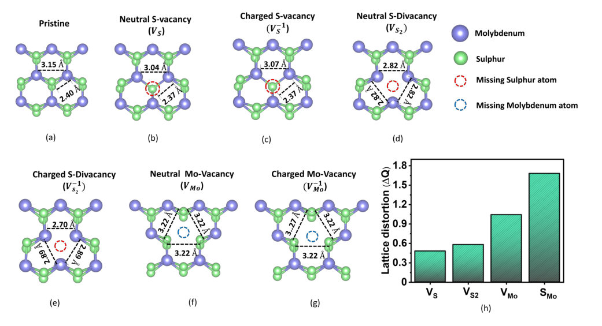
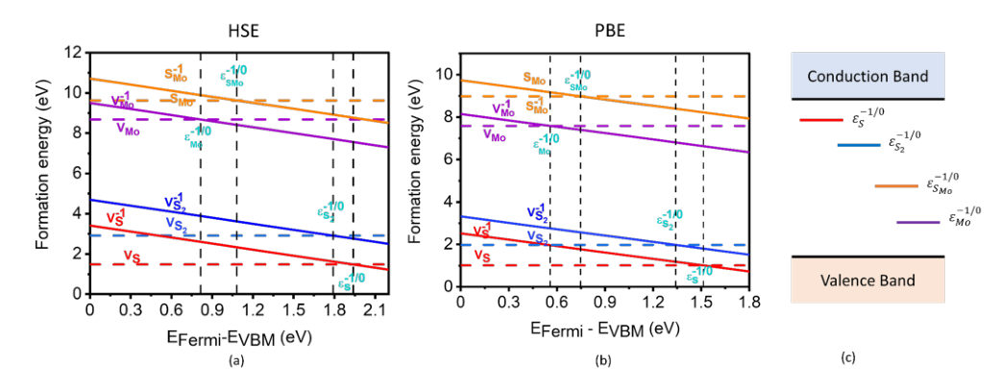
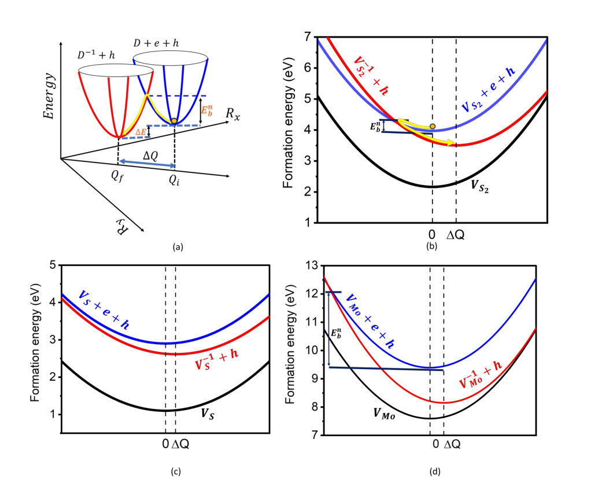
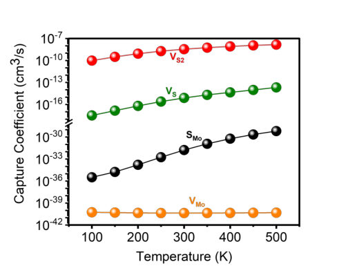
Summary. This study identifies Sulphur divacancies as the primary driver of electron trapping in monolayer MoS2. It demonstrates that the massive disparity in capture rates between different defects is caused by strong lattice relaxation rather than just the energy position of the defect levels. This finding is crucial for understanding and controlling recombination and hysteresis in 2D semiconductor devices.
Why it may be interesting. not directly relevant
Main problem. The microscopic origin of defect-dependent carrier capture dynamics in monolayer MoS2 is unclear, specifically which intrinsic defects drive charge trapping and recombination.
Main result. Sulphur divacancies (VS2) dominate electron capture due to strong lattice relaxation and enhanced electron-phonon coupling, with capture coefficients seven orders of magnitude larger than Sulphur monovacancies.
Method. First-principles calculations using VASP with HSE and PBE functionals, employing a non-radiative multiphonon (NMP) framework and a 1D configuration coordinate model.
Model / system. Monolayer Molybdenum Disulfide (MoS2) containing intrinsic defects: Sulphur monovacancy (VS), Sulphur divacancy (VS2), Molybdenum vacancy (VMo), and Sulphur antisite (SMo).
Key observables. Capture coefficients (cm3/s), charge transition levels, lattice distortion (mass-weighted displacement delta Q), and Huang-Rhys factors.
Important parameters / regimes. Capture barriers (Enb), electron-phonon coupling matrix elements (Wif), and the ratio of phonon number to Huang-Rhys factor (kappa/S).
Assumptions / limitations. Harmonic approximation for phonon wavefunctions and potential energy surfaces; linear coupling approximation for the electron-phonon coupling matrix element.
Figures summary. Fig 1 shows atomic structures of defects and associated lattice distortions; Fig 2 presents charge transition level diagrams using PBE and HSE functionals; Fig 3 illustrates the configuration coordinate diagrams and capture dynamics.
Paper structure. The paper introduces the problem of defect-induced trapping, describes the computational methodology (DFT and NMP framework), presents structural and electronic properties of various defects, analyzes the capture coefficients through lattice relaxation analysis, and concludes with the identification of the dominant trapping species.
Intrinsic defects govern carrier trapping and recombination in two-dimensional semiconductors, yet the microscopic origin of defect-dependent capture dynamics remains unclear. Here, we compute carrier capture coefficients of vacancy defects, treating monolayer MoS$_2$ as a prototype, from first principles. We find that the single Sulphur vacancy forms a shallow defect with a small capture coefficient of $\sim 10^{-16}\ \mathrm{cm}^3/\mathrm{s}$, whereas the Sulphur divacancy exhibits a capture coefficient larger by seven orders of magnitude, $\sim 10^{-9}\ \mathrm{cm}^3/\mathrm{s}$, despite being only moderately deeper in energy. This enhancement originates from strong lattice relaxation enabling efficient multiphonon capture. Consequently, single vacancies contribute weakly to trapping, while Sulphur divacancies dominate nonradiative recombination and reduce quantum yield. In contrast, molybdenum vacancies and Sulphur antisites, although deep, show much smaller capture coefficients, indicating a limited role in carrier trapping in n-type devices.
Authors: M. Tomlinson, AKM A. Rahman, S. Devi, R. Tuchikawa, M. Ishigami, D. Le, Md Z. Mohayman, A. Kushima, Y. Nakajima
Type: both · Category: strongly correlated electrons · PDF: https://arxiv.org/pdf/2605.06545v1
Analysis basis: full PDF text, analyzed in chunks
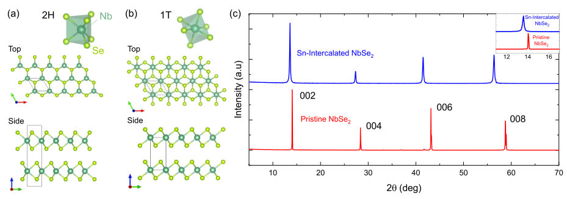
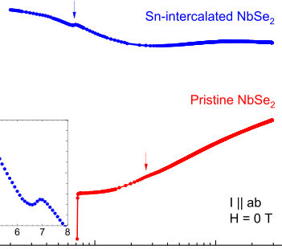
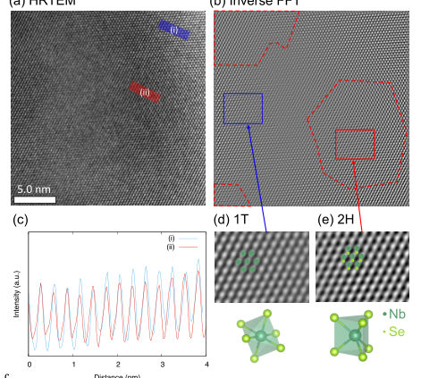
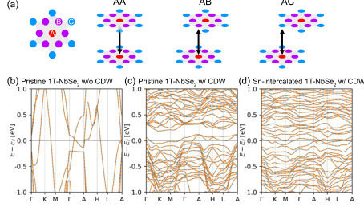
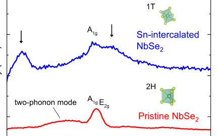
Summary. Researchers have used electrochemical intercalation to stabilize the previously inaccessible bulk 1T phase of NbSe2. This new material exhibits an insulating state that cannot be explained by standard DFT, suggesting that strong electronic correlations are at play. This provides a new 3D platform for studying correlated electronic phases.
Why it may be interesting. not directly relevant
Main problem. The 1T polymorph of NbSe2 has been historically inaccessible in bulk form, and the origin of the insulating state in the stabilized bulk 1T phase needs to be determined.
Main result. The authors successfully realized bulk 1T-NbSe2 via electrochemical Sn intercalation, revealing an insulating state driven by emergent electronic correlations rather than Anderson localization.
Method. The study uses electrochemical Sn intercalation, XRD, TEM, Raman spectroscopy, and transport measurements, complemented by spin-polarized Density Functional Theory (DFT) calculations.
Model / system. The physical system is bulk NbSe2 (a transition metal dichalcogenide) in the 1T (octahedral) phase, stabilized by Sn intercalation into the van der Waals gaps.
Key observables. Lattice expansion (c-axis), resistivity (temperature dependence), Sn concentration, and Raman vibrational modes.
Important parameters / regimes. Sn concentration (~6%), temperature-dependent resistivity, and the 1T/2H structural phase transition.
Assumptions / limitations. The study assumes that the insulating behavior is not due to Anderson localization because the Sn intercalants couple weakly to in-plane motion.
Figures summary. Fig 1 shows 2H and 1T coordination; Fig 4 displays c-axis stacking configurations and DFT-calculated band structures; Fig 5 compares Raman spectra of pristine and intercalated NbSe2.
Paper structure. The paper introduces the problem of 1T-NbSe2 accessibility, describes the electrochemical synthesis and structural characterization, presents transport and spectroscopic evidence for the insulating state, and uses DFT to argue for the role of electronic correlations.
The 1T polymorph of NbSe$_2$, long confined to the monolayer limit, has remained inaccessible in bulk. Here, we report the realization of bulk 1T-NbSe$_2$ via electrochemical Sn intercalation. Transmission electron microscopy directly reveals the formation of the 1T structure induced by Sn intercalation. The intercalated samples exhibit insulating transport behavior, in stark contrast to metallic 2H-NbSe$_2$. Density functional theory calculations, however, predict a metallic band structure, highlighting the crucial role of emergent electronic correlations in the observed insulating state. Raman spectroscopy further reveals vibrational modes associated with Sn intercalation and possible charge density wave order. Our results establish electrochemical intercalation as an effective route to stabilize otherwise inaccessible bulk polytypes, positioning bulk 1T-NbSe$_2$ as a new platform for investigating correlated electronic states.
Authors: Myung-Hwan Whangbo, Hyun-Joo Koo, Nikita V. Astakhov, Peter S. Berdonosov, Olga S. Volkova
Type: both · Category: strongly correlated electrons · PDF: https://arxiv.org/pdf/2605.05516v1
Analysis basis: full PDF text, analyzed in chunks
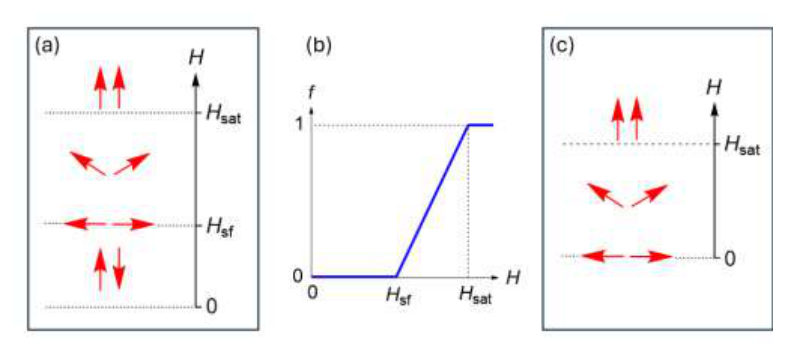
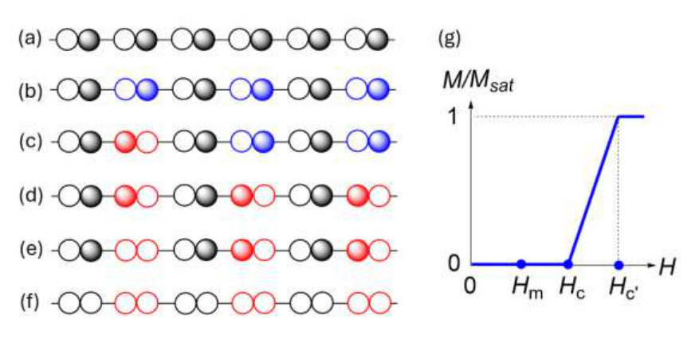
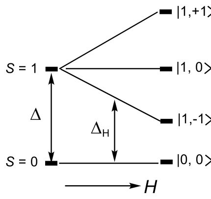
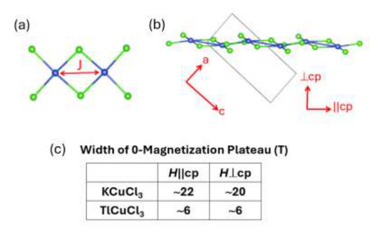
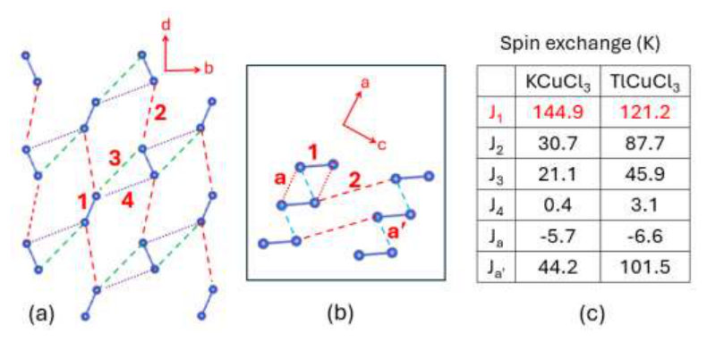
Summary. This paper investigates why certain antiferromagnets maintain a zero-magnetization plateau under a magnetic field despite having negligible single-ion anisotropy. It identifies field-induced triplet excitations as the driving mechanism and explains the observed asymmetry in specific heat through the increasing energy cost of breaking interdimer bonds.
Why it may be interesting. not directly relevant
Main problem. Explaining the mechanism behind zero-magnetization plateaus in antiferromagnets composed of spin dimers where single-ion anisotropy is negligible.
Main result. The study proposes that field-induced local excitations (mixing of the triplet state into the singlet ground state) drive the plateau, and that the asymmetry in specific heat peaks arises from increasing energy requirements for subsequent spin-flips as interdimer bonds break.
Method. The authors combine experimental specific heat and magnetization measurements on KCuCl3 with theoretical analysis involving DFT+U calculations, energy-spectrum modeling, and statistical analysis using binomial coefficients.
Model / system. The system consists of antiferromagnetic spin dimers in molecular solids KCuCl3 and TlCuCl3, modeled as an AFM chain of spin-1/2 dimers with intradimer exchange J and interdimer exchange J'.
Key observables. Magnetization (M/M_sat), specific heat (Cp), magnetic entropy (Sm), and the energy gap (Delta).
Important parameters / regimes. Intradimer exchange (J), interdimer exchange (J'), magnetic field (H), and temperature (T).
Assumptions / limitations. Assumes the phonon contribution to specific heat decreases linearly with the magnetic field and uses a binomial distribution to describe the configuration of magnetic species.
Figures summary. Figure 1 shows Type I plateau behavior (spin-flop and magnetization); Figure 2 illustrates the Type II plateau process in an AFM chain; Figure 3 shows singlet/triplet states; Figure 7 shows the asymmetric field dependence of specific heat.
Paper structure. The paper begins by defining Type I and Type II plateaus, proposes a mechanism for energy absorption via local excitations, compares KCuCl3 and TlCuCl3, analyzes the specific heat asymmetry through a statistical model of bond-breaking, and concludes with a discussion on spin orientation via spin-orbit coupling.
Certain antiferromagnets composed of antiferromagnetic spin dimers exhibit a zero-magnetization plateau despite that the single-ion anisotropy of their magnetic ions is negligible. The cause for this observation was investigated by analyzing how a magnetic field affects the energy spectrum of an antiferromagnetic chain composed of antiferromagnetic spin dimers made up of two spin-half ions and by carrying out specific heat measurements for potassium copper chloride as a function magnetic field at 2 K.
Authors: Zheng Yu, Jiayan Xu, Abhirup Patra, Sharan Shetty, Detlef Hohl, Roberto Car
Type: theory · Category: disordered systems and neural networks · PDF: https://arxiv.org/pdf/2605.05361v1
Analysis basis: full PDF text, analyzed in chunks
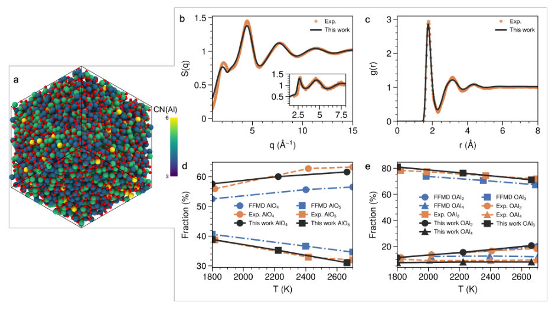
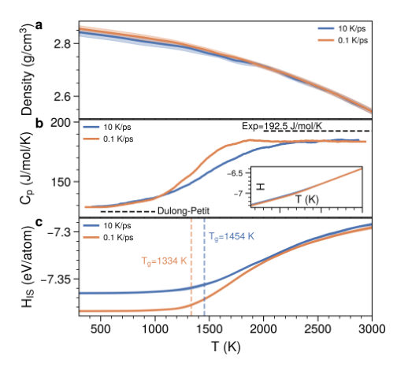
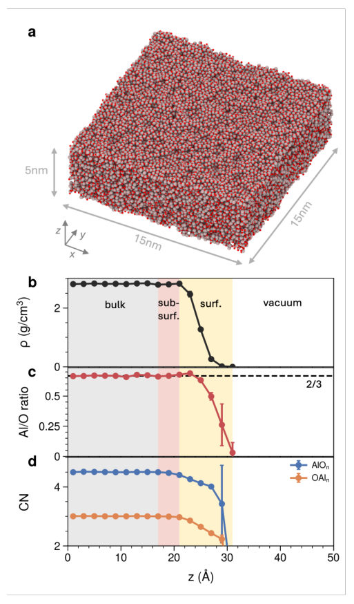
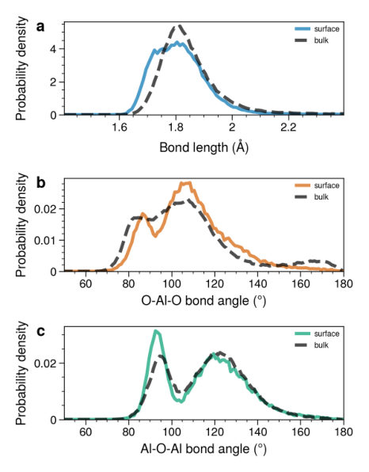
Summary. This study uses machine-learned potentials to provide a high-fidelity molecular-level picture of amorphous alumina surfaces. It demonstrates that while the surface is chemically heterogeneous and oxygen-enriched, its dynamical properties like the glass transition temperature remain remarkably similar to the bulk.
Why it may be interesting. not directly relevant
Main problem. The atomic-scale structure and dynamics of amorphous alumina (a-Al2O3) surfaces are poorly understood due to the difficulty of experimental characterization and the computational limitations of existing ab initio or classical force field models.
Main result. The Deep Potential (DP) model accurately reproduces experimental liquid and glass structures and reveals that the alumina surface is oxygen-enriched with increased under-coordinated Al and O sites, yet maintains bulk-like relaxation dynamics and glass transition temperatures.
Method. Deep Potential Molecular Dynamics (DPMD) using an active-learning protocol trained on DFT data, combined with large-scale melt-quench simulations.
Model / system. Amorphous alumina (a-Al2O3) bulk glasses and melt-quenched free surfaces, modeled using a machine-learned interatomic potential of ab initio quality.
Key observables. X-ray structure factor S(q), radial distribution function g(r), coordination numbers (AlOn and OAln), mass density profiles, glass transition temperature (Tg), and self-intermediate scattering function.
Important parameters / regimes. Cooling rates (0.1 to 90 K/ps), temperature (300 K to 3800 K), and system size (up to 90,000 atoms).
Assumptions / limitations. The X-ray approximation neglects the decay of atomic form factors with q; the surface is defined using a Gaussian-smeared atomic density field.
Figures summary. Fig 1 shows liquid Al2O3 configurations and validation against experimental S(q) and g(r); Fig 2 relates to the glass transition; Fig 4 compares bond lengths and angles between surface and bulk; Fig 5 shows surface coordination maps; Fig 7 compares surface vs bulk coordination and dynamics.
Paper structure. The paper introduces the scientific problem and the DP model, validates the model against experimental and DFT data, analyzes the bulk glass transition and cooling rate effects, characterizes the structural and chemical properties of the free surface, and concludes with the implications for surface dynamics and thin-film stability.
Understanding the atomic-scale structure and dynamics of amorphous oxide surfaces is essential for interpreting their chemical reactivity, mechanical stability, and interfacial behavior, yet direct experimental characterization remains challenging. We employ Deep Potential (DP) molecular dynamics to generate large-scale, ab initio-quality models of amorphous Al$_2$O$_3$ bulk glasses and melt-quenched free surfaces, enabling a quantitative analysis of both structure and relaxation dynamics with statistical confidence inaccessible to direct ab initio simulation. The trained DP model reproduces experimental liquid and glass structure, captures the cooling-rate dependence of the bulk glass transition, and corrects systematic biases in the polyhedral populations predicted by widely used classical force fields. At the free surface, mass density recovers to bulk values over ~10 $\unicode{x212B}$, while local coordination requires a slightly wider subsurface region to fully converge. The outermost layer is oxygen-enriched, exhibits altered polyhedral connectivity with contracted Al-O bonds, and hosts a broad population of under-coordinated motifs (notably AlO$_3$ and OAl$_2$) whose abundances are governed by glass stability. These reactive Lewis acid and Br$\unicode{x00F8}$nsted base sites are locally paired in a manner consistent with bond-valence compensation, yet remain spatially dispersed rather than aggregating into extended clusters. Despite this pronounced structural heterogeneity, the surface relaxes on the same timescale as the bulk and exhibits a comparable glass transition temperature, suggesting that the disordered surface is kinetically stable once formed. Together, these results establish a molecular-level picture of amorphous alumina surfaces and demonstrate the capability of machine-learned potentials to resolve structure-property relationships in disordered oxide interfaces.
Authors: Oliver R. Bellwood, William J. Munro
Type: theory · Category: strongly correlated electrons · PDF: https://arxiv.org/pdf/2605.05589v1
Analysis basis: full PDF text, analyzed in chunks
Summary. This paper explores whether the exact solutions of the integrable Heisenberg chain can be written in terms of simple radicals. It reveals that the underlying Bethe-roots become algebraically unsolvable at $N=8$, even though the physical energy and wavefunction remain solvable until $N=10$. This highlights a fundamental gap between the existence of an exact solution and the ability to express it analytically.
Why it may be interesting. not directly relevant
Main problem. The paper investigates the distinction between formal integrability and analytic tractability by determining if the exact solutions of the Heisenberg chain can be expressed in closed-form radicals.
Main result. The authors find that while the Bethe-roots become Galois unsolvable at $N=8$, the ground state energy and wavefunction coefficients remain solvable in radicals until $N=10$, demonstrating that algebraic complexity grows at different rates.
Method. The study uses the coordinate Bethe ansatz to derive symbolic ground states and employs Galois theory (Stauduhar's method and Fieker-Klueners algorithm via MAGMA) to analyze the algebraic structure of the solutions.
Model / system. The spin-1/2 Heisenberg antiferromagnetic chain with periodic boundary conditions, specifically focusing on finite-size systems from $N=2$ to $N=10$ sites.
Key observables. Bethe-roots (magnon momenta), ground state energy, and wavefunction coefficients.
Important parameters / regimes. System size $N$ (up to 10 sites), exchange coupling $J$, and the algebraic degree of the solutions.
Assumptions / limitations. The analysis is limited to small finite-size chains ($N \le 10$) and assumes the use of the coordinate Bethe ansatz for symbolic derivation.
Figures summary. Figure 1 shows exact symbolic ground states in the non-crossing valence-bond basis for $N=2, 4, 6, 8$. Figure 2 summarizes the transition of algebraic complexity from radical solvability to unsolvable structures as chain length increases.
Paper structure. The paper introduces the problem of analytic tractability, describes the Heisenberg model and Bethe ansatz methods, presents the algebraic analysis of roots and wavefunctions, discusses the crossover point at $N=8$, and concludes with scaling conjectures and limitations.
The spin-1/2 Heisenberg antiferromagnetic chain is the canonical example of an integrable quantum many-body model. Despite its exact solvability, explicit finite-size solutions are typically only accessible via numerical evaluation of the Bethe ansatz equations. Here, we analyse the algebraic structure of the exact, symbolic ground states for chains up to ten sites using the coordinate Bethe ansatz. We show that both the ground state wavefunction and the Bethe-roots rapidly develop algebraic complexity with respect to system size, but at different rates. The Bethe-roots appear to become Galois unsolvable for chains of eight or more sites, whereas the ground state wavefunction coefficients and energy appear to become unsolvable for ten or more sites. This demonstrates a lack of explicit analytic tractability in a quantum integrable model due to algebraic complexity.
Authors: Violeta Calleja-Solanas, Santiago Lamata-Otín, Carlos Gómez-Ambrosi, Jesús Gómez-Gardeñes, Sandro Meloni
Type: theory · Category: statistical mechanics · PDF: https://arxiv.org/pdf/2605.06301v1
Analysis basis: full PDF text, analyzed in chunks
Summary. This paper shows that higher-order interactions in complex systems can be 'hidden' because simpler pairwise models can accurately predict population dynamics while providing a false description of the underlying interaction structure. It identifies a fundamental limit to inferring complex interaction networks from time-series data alone.
Why it may be interesting. not directly relevant
Main problem. The paper investigates the 'mechanistic identifiability' problem: whether higher-order interactions (HOIs) in ecological communities can be uniquely detected from species abundance time-series data or if they can be hidden by effective pairwise models.
Main result. The authors demonstrate that higher-order Lotka-Volterra dynamics can be accurately mimicked by pairwise models, leading to high predictive accuracy but fundamentally incorrect ecological interpretations (misidentifying species roles).
Method. The study uses a computational pipeline involving numerical integration of higher-order Lotka-Volterra systems, linear least-squares regression to fit growth rates to pairwise hyperplanes, and the use of Hessian matrices to detect curvature in growth rate functions.
Model / system. The system consists of multi-species ecological communities modeled using higher-order Lotka-Volterra (hoLV) equations, which include intrinsic growth rates, pairwise interactions, and triadic (three-species) interactions.
Key observables. Species abundance trajectories, per capita growth rates, system attractors (equilibrium vs. limit cycles), and the Hessian matrix of growth rates.
Important parameters / regimes. Intrinsic growth rates (ri), pairwise interaction coefficients (aij), higher-order interaction coefficients (bijk), and the relative weight of HOIs (theta).
Assumptions / limitations. The analysis uses idealized in silico conditions with high-resolution trajectories and no observation error to test fundamental limits of identifiability.
Figures summary. Figure 1 shows the methodology flowchart; Figure 2 compares detectable vs. undetectable systems using 3-species models; Figure 3 shows a 7-species multi-trophic system where pairwise approximations remain accurate despite HOIs; Figure 4 illustrates how Jacobian entries can fail to show sign changes even when HOIs are present.
Paper structure. The paper introduces the problem of mechanistic identifiability, defines the higher-order Lotka-Volterra model, presents a computational pipeline for inference, categorizes failure modes of detection (detectable vs. hidden regimes), proposes the Hessian matrix as a diagnostic tool, and demonstrates the scalability of the phenomenon in complex communities.
Higher-order interactions are increasingly recognized as a key component of ecological dynamics. However, we show that higher-order Lotka-Volterra dynamics can, in some scenarios, be accurately reproduced by effective pairwise models fitted to the same abundance time series. Consequently, higher-order interactions cannot, in general, be inferred from time-series data alone. We further identify a fundamental problem of mechanistic identifiability, whereby distinct interaction mechanisms generate nearly indistinguishable dynamics, potentially leading to accurate yet misleading ecological interpretations. Our results highlight the need to complement time-series data with additional ecological information to infer interaction structure reliably.
Authors: Ramgopal Agrawal, Victor Dotsenko, Maxym Dudka, Marco Picco, Enzo Marinari, Gleb Oshanin
Type: both · Category: statistical mechanics · PDF: https://arxiv.org/pdf/2605.05915v1
Analysis basis: full PDF text, analyzed in chunks
Summary. This paper proves that the critical internal energy in the weakly-disordered Baxter model does not self-average, meaning fluctuations remain significant even in the thermodynamic limit. This implies that single large samples cannot represent the ensemble, necessitating averaging over many disorder realizations. The findings also provide numerical confirmation of the lack of self-averaging in the disordered Ising model.
Why it may be interesting. not directly relevant
Main problem. The study investigates the presence or absence of self-averaging for the critical internal energy in a weakly-disordered two-dimensional Baxter eight-vertex model.
Main result. The relative variance of the critical internal energy increases with system size and approaches a finite constant as L goes to infinity, demonstrating a lack of self-averaging for both the internal energy and free energy.
Method. The researchers used a combination of analytical replica and renormalization-group methods alongside extensive numerical Monte Carlo simulations and parallel tempering.
Model / system. A weakly-disordered two-dimensional Baxter eight-vertex model, represented as two ferromagnetic Ising models coupled by a four-spin interaction of strength g0, with Gaussian spatial disorder in the Ising couplings.
Key observables. Critical internal energy (E), relative variance (Re), Binder cumulant (U4), and specific heat (Cp).
Important parameters / regimes. Coupling parameter g0 (determining the sign of the specific heat exponent), disorder strength (u0), and system size (L).
Assumptions / limitations. The study focuses on the weak disorder limit and small positive g0 for the analytical RG framework.
Figures summary. Figure 1 shows the lattice structure and four-spin interactions; Figure 2 depicts the relative variance Re increasing with system size L; additional figures show the scaling of energy and specific heat in the disordered Ising model.
Paper structure. The paper introduces the problem of self-averaging, defines the disordered Baxter model Hamiltonian, presents analytical results using replica and RG methods, provides numerical verification via Monte Carlo simulations, and concludes with comparisons to the disordered Ising model.
We investigate the first two moments of the critical internal energy $E$ in a weakly disordered two-dimensional Baxter eight-vertex model as a function of the system size $L$, evaluated at the pseudo-critical point. Disorder is introduced via an equivalent representation of the pure eight-vertex model in terms of two ferromagnetic Ising models coupled by a four-spin interaction of strength $g_0$, where the Ising couplings consist of a uniform ferromagnetic part $J>0$ supplemented by weak Gaussian spatial disorder. In the critical regime, the model is formulated in terms of interacting Grassmann-Majorana spinor fields with quartic interactions and analyzed, for small positive $g_0$, using a combination of replica and renormalization-group methods. We also run extensive numerical simulations measuring the critical internal energy. Our results show that its relative variance increases with $L$ and approaches a finite constant as $L \to \infty$ for both $\pm g_0$. Hence, fluctuations remain relevant independently of the sign of $g_0$ (and thus of the specific-heat exponent), implying a lack of self-averaging of both the critical internal energy and the free energy. Consequently, reliable estimates of these quantities require averaging over many disorder realizations. In addition, we numerically confirm earlier predictions concerning the absence of self-averaging of the critical internal energy in the disordered Ising model.
Authors: Olaf Hohm
Type: theory · Category: disordered systems and neural networks · PDF: https://arxiv.org/pdf/2605.06394v1
Analysis basis: full PDF text, analyzed in chunks
Summary. These lecture notes provide a mathematical tutorial connecting the physics of phase transitions and renormalization to the mechanics of neural networks. It highlights how concepts like energy landscapes and marginalization explain the behavior of models ranging from spin glasses to Large Language Models.
Why it may be interesting. not directly relevant
Main problem. Establishing a pedagogical and mathematical bridge between classical statistical physics (phase transitions, renormalization group) and the framework of modern deep learning and large language models.
Main result. The notes demonstrate that the energy functions of spin-glass models are mathematically identical to Hopfield networks and that the process of integrating out hidden neurons in RBMs is analogous to the Renologization Group process.
Method. The author uses probability theory, the transfer matrix method, mean-field approximations, and Renormalization Group (RG) transformations to connect microscopic spin configurations to macroscopic thermodynamic properties and neural network architectures.
Model / system. The lecture notes cover the Ising model, spin-glass models (e.g., Edwards-Anderson), Hopfield networks, Boltzmann machines, and Transformer architectures used in Large Language Models.
Key observables. Partition function, free energy density, magnetization, two-point correlation functions, temperature, and scaling exponents.
Important parameters / regimes. Temperature (beta), coupling constants (J), external magnetic field (B), and scaling parameters for LLMs (number of parameters N, data size D, and compute C).
Assumptions / limitations. Initial treatments assume a finite configuration space; the 2D RG analysis uses a truncated subspace of interactions; and the LLM scaling analysis assumes power-law behavior.
Figures summary. Figure 3 illustrates the RG flow of the 1D Ising model; Figure 4 shows a 2D lattice structure; and Figure 7 displays the power-law scaling of loss relative to parameters, data, and compute.
Paper structure. The paper progresses from basic probability and the Ising model to the Renormalization Group, then to Boltzmann machines and Hopfield networks, and finally to modern deep learning architectures and LLM scaling laws.
These lecture notes introduce some topics of classical statistical physics, particularly those that are relevant for neural networks and deep learning. Statistical physics is treated as a branch of probability theory or statistics, with the goal of making concepts such as phase transitions and the renormalization group accessible to readers without prior knowledge of physics. We introduce the Boltzmann-Gibbs distribution and the thermodynamic potentials on a finite configuration space, notably for Ising spins and spin-glass models on a lattice, and then define phase transitions as discontinuities that arise in the limit that the number of lattice points goes to infinity. We further introduce Hopfield networks and Boltzmann machines, which are governed by the same energy function as spin-glass models, and discuss the learning algorithm for restricted Boltzmann machines. In this algorithm hidden neurons are integrated out as in the renormalization group. Finally, modern deep learning is introduced, whose early developments were in part motivated by restricted Boltzmann machines in that they carry many layers of hidden neurons. A description of large language models is given.
Authors: Vivien Londe
Type: theory · Category: quantum information and computing · PDF: https://arxiv.org/pdf/2605.06284v1
Analysis basis: full PDF text, analyzed in chunks
Summary. This paper provides a mathematical framework for arranging quantum error-correcting code components into local 2D and 3D architectures. By 'unfolding' high-dimensional Reed-Muller codes, it enables more efficient magic state distillation with significantly reduced logical error rates.
Why it may be interesting. not directly relevant
Main problem. The paper aims to generalize the 'unfolding' of Reed-Muller distillation factories to achieve local 2D and 3D layouts for Z stabilizers, providing an algebraic basis for these structures.
Main result. The author derives 2D and 3D local layouts for Z stabilizers of distance 4 and distance 7 Reed-Muller codes and demonstrates significant improvements in magic state distillation fidelity.
Method. The work uses an algebraic framework involving polynomials over finite fields (F2) and Gray code ordering to transform high-dimensional hypercube descriptions into lower-dimensional local layouts.
Model / system. The study focuses on Quantum Reed-Muller (QRM) codes, specifically analyzing the stabilizer groups and logical operations of codes like QRM(4,1), QRM(6,1), and QRM(7,2) within a noise-biased model (e.g., cat qubits).
Key observables. Logical error probability, stabilizer group dimension, minimum distance (dZ), and output infidelity of distilled T and CCZ states.
Important parameters / regimes. Input infidelity (p=10^-3), code distance, number of logical qubits, and the prefactor of the logical error probability.
Assumptions / limitations. The efficiency of the local layouts assumes a noise-biased model where the X stabilizer group does not necessarily require locality.
Figures summary. Figures illustrate the geometric unfolding of stabilizers, showing 2D planar layouts, 3D 'Rubik's Cube' layouts, and the progression of building stabilizer bases using subcubes and Gray code ordering.
Paper structure. The paper introduces the unfolding problem, provides an algebraic derivation of the stabilizer structure, details the construction of 2D and 3D layouts, analyzes the logical action of Clifford hierarchy operators, and concludes with error performance analysis.
We generalize the unfolding of a Reed Muller distillation factory of Ruiz et. al. by exhibiting the algebraic structure that the unfolding is based on. We describe a 2D local layout for the Z stabilizers of a distance 4 Reed Muller distillation factory and a 3D local layout for the Z stabilizer of a distance 4 and a distance 7 Reed Muller distillation factory. Given input T states with infidelities $p=10^{-3}$, the 2D local distillation factory with distance 4 outputs a CCZ state with infidelity $p=8.256 \times 10^{-9}$ and the 3D local distillation factory with distance 7 outputs a T state with infidelity $p=1.1811 \times 10^{-17}$.
Authors: Matvei Fedin, Andrei Morozov
Type: theory · Category: quantum information and computing · PDF: https://arxiv.org/pdf/2605.06633v1
Analysis basis: full PDF text, analyzed in chunks
Summary. This paper presents a method to use interpretable machine learning to automate the discovery of efficient quantum circuit architectures. By analyzing the weights of a linear model, the authors derive a simplified, scalable algorithm for diagonal matrices that outperforms standard numerical decomposition techniques.
Why it may be interesting. not directly relevant
Main problem. The difficulty of decomposing large unitary operators into efficient, minimal sequences of elementary quantum gates and the lack of interpretability in standard black-box machine learning models.
Main result. The authors developed an interpretable machine learning workflow that discovers a universal, shortest analytic quantum algorithm for arbitrary diagonal matrices with a complexity of O(2^n), significantly more efficient than standard Qiskit numerical methods.
Method. A two-stage interpretable machine learning approach using a linear model (PyTorch) and Model-Weight Analysis (MWA) to extract mathematical hypotheses from raw circuit data, combined with PCA and clustering to filter redundant gate configurations.
Model / system. The study focuses on n-qubit quantum computing architectures, specifically targeting the decomposition of diagonal unitary operators within the U(2^n) group using gate sets like CNOT and single-qubit rotations.
Key observables. Gate counts (CNOT and rotations), circuit depth, Mean Squared Error (MSE), and R-squared score.
Important parameters / regimes. Number of qubits (n), rotation angles (within a small neighborhood epsilon around zero to ensure linearity), and learning rate hyperparameters (alpha and beta).
Assumptions / limitations. The mapping between circuit parameters and matrix elements is assumed to be linear; the training data is assumed to be noise-free; and the study focuses primarily on diagonal matrices rather than general unitaries.
Figures summary. Plots comparing gate count scaling (log-scale), workflow diagrams for raw and pretty data generation, PCA visualizations of parameter clusters, and convergence plots for loss and R-squared scores.
Paper structure. The paper introduces the problem of gate decomposition, presents a two-stage ML workflow (Raw Data to Math Hypothesis), details the data generation and clustering techniques, demonstrates the discovery of optimized diagonal circuit schemes, and provides mathematical proofs for SGD convergence and gate bounds.
Machine learning nowadays becomes a useful instrument in many subjects. In this paper we use interpretable machine learning to build quantum algorithm. By studying the parameters of the machine learning algorithm we were able to construct universal shortest analytic quantum algorithm for arbitrary diagonal matrix of any size.
Authors: Alexander I. Zenchuk, Junde Wu
Type: theory · Category: quantum information and computing · PDF: https://arxiv.org/pdf/2605.06167v1
Analysis basis: full PDF text, analyzed in chunks

Summary. This paper introduces a new variational quantum algorithm for computing eigenvalues and generalized eigenvalues of any complex matrix. By encoding matrix elements directly into quantum amplitudes and using ancilla measurements to clean the state, it avoids the need for complex Hermitian embedding or Trotterization. The method provides a scalable way to handle non-unitary problems in quantum computing.
Why it may be interesting. not directly relevant
Main problem. Developing a variational quantum algorithm to calculate both standard eigenvalues and generalized eigenvalues for arbitrary N x N complex matrices, specifically addressing the non-unitarity obstacle.
Main result. The proposed algorithm achieves a loss function minimum of zero when matrices are transformed into upper triangular forms, with a circuit depth of O(N^2 log N) and a proven quadratic relationship between loss function accuracy and eigenvalue accuracy.
Method. A hybrid quantum-classical variational approach using matrix encoding into probability amplitudes, ancilla measurement for garbage removal, and classical gradient optimization via parameter shifts.
Model / system. A quantum computing architecture utilizing n-qubit subsystems (R, C, L, chi, psi, etc.) to encode matrix elements and perform unitary transformations.
Key observables. The loss function (L) representing the deviation from upper triangular form, the normalization factor (G), and the success probability (p) of the measurement step.
Important parameters / regimes. Matrix dimension N, circuit depth O(N^2 log N), circuit size O(log N), and the relationship between eigenvalue accuracy (epsilon) and parameter encoding accuracy (sigma).
Assumptions / limitations. The matrices are assumed to be non-degenerate and complex; numerical simulations assume perfect encoding of optimization parameters to establish baseline performance.
Figures summary. Figure 1 shows the quantum circuit architecture and specific gate implementations; Figure 2 demonstrates the linear scaling of the iteration number with log(epsilon) and the quadratic scaling of the loss function accuracy.
Paper structure. The paper proposes the GEV algorithm, discusses the EV algorithm, analyzes algorithm characteristics and accuracy, and concludes with numerical simulations for 4x4 matrices.
We propose a variational method for constructing the eigenvalues and generalized eigenvalues for an arbitrary $N\times N$ complex matrix. The quantum part of our algorithm is based on encoding the matrix elements into the pure state of a quantum system and expressing the loss function with optimization parameters in terms of certain probability amplitudes in the superposition state. The principal step of this algorithm is the measurement of the ancilla state that removes all extra terms from the above superposition and allows to probabilistically construct the required loss function along with its derivatives with respect to the optimization parameters. These output data are used to find the new values of optimization parameters for the next iteration of the loss function in the gradient optimization method. The depth and size of the circuit for this algorithm are, respectively, $O(N^2 \log N)$ and $O(\log N)$.
Authors: Qiang Gao, Eslam Khalaf
Type: theory · Category: strongly correlated electrons · PDF: https://arxiv.org/pdf/2605.05292v1
Analysis basis: full PDF text, analyzed in chunks
Summary. This paper provides a microscopic foundation for understanding charged excitations in Chern ferromagnets, such as those found in moiré materials. It demonstrates how the interplay between interaction-induced dispersion and Berry curvature distribution determines whether spin polarons remain stable or unbind.
Why it may be interesting. not directly relevant
Main problem. Developing a microscopic theory for spin polarons in Chern ferromagnets and understanding how their stability and energy are affected by quantum geometry and interaction-induced dispersion.
Main result. The authors derive a variational family of wavefunctions that accurately capture spin polaron states, showing that interaction-generated dispersion is the primary cause of polaron unbinding.
Method. A microscopic variational approach using an antisymmetrized geminal product (AGP) of particle-hole wavefunctions, benchmarked against Exact Diagonalization in the Lowest Landau Level.
Model / system. A system of electrons in $C=1$ Chern bands (typical of moiré heterostructures) with $SU(2)$ spin symmetry, governed by a projected density-density interaction Hamiltonian.
Key observables. Binding energy, wavefunction overlap with exact results, total spin, and single-particle bandwidth.
Important parameters / regimes. Number of spin flips ($n$), screening length ($d$), quantum geometry non-uniformity ($\gamma$), and the variational size parameter ($L_c$).
Assumptions / limitations. The theory assumes the existence of an ideal Chern band limit and utilizes a variational ansatz that may be limited by the choice of the single-particle dressing function.
Figures summary. Figures show binding energy and wavefunction overlap as functions of screening distance and size parameter, as well as the impact of Berry curvature non-uniformity on polaron stability.
Paper structure. The paper introduces the microscopic problem, develops the exact wavefunctions in the ideal limit, extends these to a variational framework for realistic bands, performs numerical benchmarking against ED, and analyzes the effects of quantum geometry and dispersion.
We develop a microscopic theory of charged excitations in an SU(2) Chern ferromagnet and obtain closed-form wavefunctions for a hierarchy of charge-$e$ spin polaron states binding an arbitrary number of spin flips. In an ideal Chern-$1$ band with a normal-ordered contact interaction, we show that these polarons are exact eigenstates of the Hamiltonian with the same energy as single-hole excitations. Away from this ideal limit, we promote these states to a variational family by introducing a single size parameter and a geometry-informed single-particle dressing. Our momentum-space wavefunctions admit two equivalent representations: a ratio of Jastrow factors of Weierstrass functions of relative momenta or an antisymmetrized geminal product of particle-hole wavefunctions. The latter enables efficient evaluation of overlaps and expectation values for large system sizes and many spin flips. Benchmarking in the lowest Landau level, the single-spin-flip ansatz achieves $\gtrsim 99\%$ overlap with exact diagonalization and accurately captures binding energies, while the multi-spin-flip energies interpolate smoothly toward the large-texture (skyrmion) regime. For Chern bands with tunable quantum geometry, we find that interaction-generated single particle dispersion quickly destabilizes the spin polarons once quantum geometry becomes sufficiently non-uniform. When such dispersion is suppressed, however, the bound states persist deeper into the non-uniform regime, with the binding energy slowly decreasing and the bound state becoming larger as the quantum geometry becomes more concentrated. Our results provide a microscopic foundation for analyzing doped Chern ferromagnets in moiré platforms and lay the groundwork for variational wavefunctions of multi-polaron excitations and phases.
Authors: Leonardo Sebastian Herrera, Sergio Davis
Type: theory · Category: statistical mechanics · PDF: https://arxiv.org/pdf/2605.05428v1
Analysis basis: full PDF text, analyzed in chunks
Summary. This paper introduces a new way to estimate parameters in kappa distributions, which are common in non-equilibrium plasma physics. By treating temperature fluctuations as a hidden variable, the authors turn a difficult optimization problem into a simple, efficient algorithm. This provides a more robust and mathematically clear alternative to traditional fitting methods.
Why it may be interesting. not directly relevant
Main problem. Parameter estimation for kappa distributions is difficult because they do not belong to the exponential family, leading to transcendental equations that are numerically unstable and lack closed-form solutions.
Main result. The authors developed an Expectation-Maximization (EM) algorithm that uses data augmentation to recover an exponential family structure, providing a computationally efficient and analytically closed-form method for estimating the spectral index.
Method. The method uses a data augmentation approach where the inverse temperature is treated as a latent gamma-distributed variable, allowing for an EM algorithm with an analytically tractable E-step and M-step.
Model / system. The model is based on the Beck-Cohen superstatistics framework, specifically applied to collisionless plasmas where particle velocities follow a kappa distribution derived from a hierarchical model with fluctuating inverse temperature.
Key observables. Particle velocities (or kinetic energies) and the fourth-to-second moment ratio (R).
Important parameters / regimes. Spectral index (kappa), thermal velocity (v_th), shape parameter (alpha), scale parameter (theta), and the Maxwellian limit (kappa approaching infinity).
Assumptions / limitations. The inverse temperature follows a gamma distribution, observations are independent and identically distributed (i.i.d.), and the fourth velocity moment must exist for the specific moment-based initialization used.
Figures summary. The figures show velocity histograms compared to optimal distributions, the monotonic increase of log-likelihood, and the convergence of alpha and theta parameters across different kappa regimes.
Paper structure. The paper identifies the failure of direct MLE, introduces the superstatistical hierarchical model, derives the EM algorithm via data augmentation, provides a moment-based initialization strategy, and validates the method using Monte Carlo simulations on synthetic data.
Kappa distributions are widely used in space plasma physics to model velocity distribution functions with extended tails. However, parameter estimation in these distributions presents a fundamental challenge: the kappa distribution does not belong to the exponential family, which prevents the direct application of analytically tractable maximum likelihood methods. In this work we propose a solution to this problem based on data augmentation: we introduce the inverse temperature $β$ as a gamma-distributed latent variable, thereby recovering the exponential family structure in the complete-data likelihood. This enables an implementation of the expectation-maximization (EM) algorithm in analytically closed form, with E-step and M-step derived from sufficient statistics. Our approach is agnostic with respect to the underlying physical mechanism generating fluctuations of $β$, which is a central aspect of the Beck-Cohen superstatistics framework, allowing a statistically rigorous treatment without compromising physical interpretability. We demonstrate that the method converges to the usual maximum likelihood estimators by applying it to synthetic data. Our results suggest that EM offers a computationally efficient and conceptually clear alternative for inference in superstatistical systems with temperature fluctuations.
← Index · ← Previous · Next →